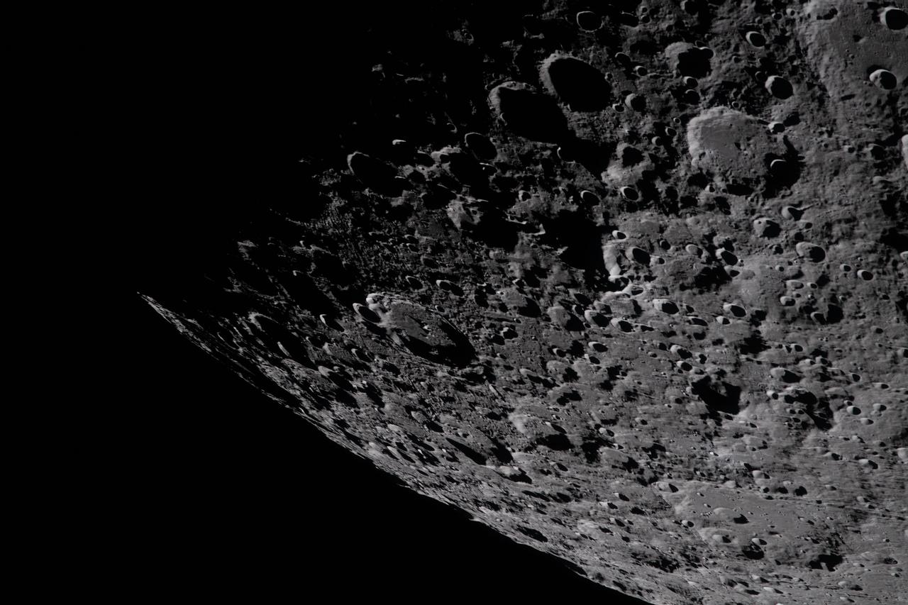

Why the South Pole?
The lunar South Pole region offers unique opportunities for exploration, scientific discovery, and a long-term human presence. It may contain resources that could one day help support future explorers.
Studying this part of the Moon could also help scientists answer questions about the history of the Moon, Earth, and our solar system. It is also one of the most extreme environments humans have ever set out to explore.
- Location
- Near the Moon’s South Pole
- Challenge
- An extreme environment